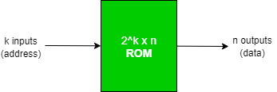
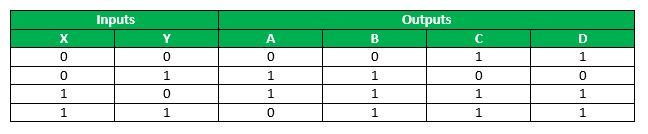
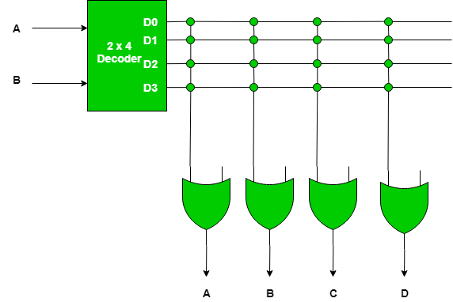

Read-Only Memory (ROM) is the primary memory unit of any computer system along with the Random Access Memory (RAM), but unlike RAM, in ROM, the binary information is stored permanently . Now, this information to be stored is provided by the designer and is then stored inside the ROM . Once, it is stored, it remains within the unit, even when power is turned off and on again .
The information is embedded in the ROM, in the form of bits, by a process known as programming the ROM . Here, programming is used to refer to the hardware procedure which specifies the bits that are going to be inserted in the hardware configuration of the device . And this is what makes ROM a Programmable Logic Device (PLD) .
Programmable Logic Device
A Programmable Logic Device (PLD) is an IC (Integrated Circuit) with internal logic gates connected through electronic paths that behave similar to fuses . In the original state, all the fuses are intact, but when we program these devices, we blow away certain fuses along the paths that must be removed to achieve a particular configuration. And this is what happens in ROM, ROM consists of nothing but basic logic gates arranged in such a way that they store the specified bits.
Typically, a PLD can have hundreds to millions of gates interconnected through hundreds to thousands of internal paths . In order to show the internal logic diagram of such a device a special symbology is used, as shown below-

The first image shows the conventional way of representing inputs to a logic gate and the second symbol shows the special way of showing inputs to a logic gate, called as Array Logic Symbol, where each vertical line represents the input to the logic gate .
Structure of ROM
The block diagram for the ROM is as given below-

Block Structure
- It consists of k input lines and n output lines .
- The k input lines is used to take the input address from where we want to access the content of the ROM .
- Since each of the k input lines can be either 0 or 1, so there are 2 total addresses which can be referred to by these input lines and each of these addresses contain n bit information, which is given out as the output of the ROM.
- Such a ROM is specified as 2 x n ROM .
Internal Structure
- It consists of two basic components – Decoder and OR gates .
- A Decoder is a combinational circuit which is used to decode any encoded form ( such as binary, BCD ) to a more known form ( such as decimal form ) .
- In ROM, the input to a decoder will be in binary form and the output will represent its decimal equivalent .
- The Decoder is represented as l x 2
 , that is, it has l inputs and has 2 outputs, which implies that it will take l-bit binary number and decode it into one of the 2 decimal number .
, that is, it has l inputs and has 2 outputs, which implies that it will take l-bit binary number and decode it into one of the 2 decimal number . - All the OR gates present in the ROM will have outputs of the decoder as their input .
Classification Of ROM
- Mask ROM – In this type of ROM, the specification of the ROM (its contents and their location), is taken by the manufacturer from the customer in tabular form in a specified format and then makes corresponding masks for the paths to produce the desired output . This is costly, as the vendor charges special fee from the customer for making a particular ROM (recommended, only if large quantity of the same ROM is required).
Uses – They are used in network operating systems, server operating systems, storing of fonts for laser printers, sound data in electronic musical instruments .
- PROM – It stands for Programmable Read-Only Memory . It is first prepared as blank memory, and then it is programmed to store the information . The difference between PROM and Mask ROM is that PROM is manufactured as blank memory and programmed after manufacturing, whereas a Mask ROM is programmed during the manufacturing process.
To program the PROM, a PROM programmer or PROM burner is used . The process of programming the PROM is called as burning the PROM . Also, the data stored in it cannot be modified, so it is called as one – time programmable device.Uses – They have several different applications, including cell phones, video game consoles, RFID tags, medical devices, and other electronics.
- EPROM – It stands for Erasable Programmable Read-Only Memory . It overcomes the disadvantage of PROM that once programmed, the fixed pattern is permanent and cannot be altered . If a bit pattern has been established, the PROM becomes unusable, if the bit pattern has to be changed .
This problem has been overcome by the EPROM, as when the EPROM is placed under a special ultraviolet light for a length of time, the shortwave radiation makes the EPROM return to its initial state, which then can be programmed accordingly . Again for erasing the content, PROM programmer or PROM burner is used.
Uses – Before the advent of EEPROMs, some micro-controllers, like some versions of Intel 8048, the Freescale 68HC11 used EPROM to store their program .
- EEPROM – It stands for Electrically Erasable Programmable Read-Only Memory . It is similar to EPROM, except that in this, the EEPROM is returned to its initial state by application of an electrical signal, in place of ultraviolet light . Thus, it provides the ease of erasing, as this can be done, even if the memory is positioned in the computer. It erases or writes one byte of data at a time .
Uses – It is used for storing the computer system BIOS.
- Flash ROM – It is an enhanced version of EEPROM .The difference between EEPROM and Flash ROM is that in EEPROM, only 1 byte of data can be deleted or written at a particular time, whereas, in flash memory, blocks of data (usually 512 bytes) can be deleted or written at a particular time . So, Flash ROM is much faster than EEPROM .
Uses – Many modern PCs have their BIOS stored on a flash memory chip, called as flash BIOS and they are also used in modems as well.
Programming the Read-Only Memory (ROM)
To understand how to program a ROM, consider a 4 x 4 ROM, which means that it has total of 4 addresses at which information is stored, and each of those addresses has a 4-bit information, which is permanent and must be given as the output, when we access a particular address . The following steps need to be performed to program the ROM –
- Construct a truth table, which would decide the content of each address of the ROM and based upon which a particular ROM will be programmed.
So, the truth table for the specification of the 4 x 4 ROM is described as below :

This truth table shows that at location 00, content to be stored is 0011, at location 01, the content should be 1100, and so on, such that whenever a particular address is given as input, the content at that particular address is fetched . Since, with 2 input bits, 4 input combinations are possible and each of these combinations hold a 4-bit information, so this ROM is a 4 X 4 ROM .
- Now, based upon the total no. of addresses in the ROM and the length of their content, decide the decoder as well as the no. of OR gates to be used .
Generally, for a 2 x n ROM, a k x 2 decoder is used, and the total no. of OR gates is equal to the total no. of bits stored at each location in the ROM .So, in this case, for a 4 x 4 ROM, the decoder to be used is a 2 x 4 decoder.
The following is a 2 x 4 decoder –
The truth table for a 2 x 4 decoder is as follows –

When both the inputs are 0, then only D is 1 and rest are 0, when input is 01, then, only D
 is high and so on. (Just remember that if the input combination of the decoder resolves to a particular decimal number d, then at the output side the terminal which is at position d + 1 from the top will be 1 and rest will be 0).
is high and so on. (Just remember that if the input combination of the decoder resolves to a particular decimal number d, then at the output side the terminal which is at position d + 1 from the top will be 1 and rest will be 0).Now, since we want each address to store 4 – bits in the 4 x 4 ROM, so, there will be 4 OR gates, with each of the 4 outputs of the decoder being input to each one of the 4 OR gates, whose output will be the output of the ROM, as follows –

A cross sign in this figure shows connection between the two lines is intact . Now, since there are 4 OR gates and 4 output lines from the decoder, so there are total of 16 intersections, called as crosspoint .
- Now, program the intersection between the two lines, as per the truth table, so that the output of the ROM ( OR gates ) is in accordance with the truth table .
For programming the crosspoints, initially all the crosspoints are left intact, which means that it is logically equivalent to a closed switch, but these intact connections can be blown by the application of a high – voltage pulse into these fuse, which will disconnect the two interconnected lines, and in this way the output of a ROM can be manipulated .So, to program a ROM, just look at the truth table specifying the ROM and blow away (if required) a connection . The connections for the 4 x 4 ROM as per the truth table is as shown below –

Remember, a cross sign is used to denote that the connection is left intact and if there is no cross this means that there is no connection .
In this figure, since, as can be seen from the truth table specifying the ROM, when the input is 00, then, the output is 0011, so as we know from the truth table of a decoder, that input 00 gives output such that only D is 1 and rest are 0, so to get output 0011 from the OR gates, the connections of D with the first two OR gates has been blown away, to get the outputs as 0, while the last two OR gates give the output as 1, which is what is required .
Similarly, when the input is 01, then the output should be 1100, and with input 01, in decoder only D
is 1 and rest are 0, so to get the desired output the first two OR gates have their connection intact with D, while last two OR gates have their connection blown away . And for the rest also the same procedure is followed .
So, this is how a ROM is programmed and since, the output of these gates will remain constant everytime, so that is how the information is stored permanently in the ROM, and does not get altered even on switching on and off .
Reference-
- Fundamental of Digital Circuits by A. Anand Kumar